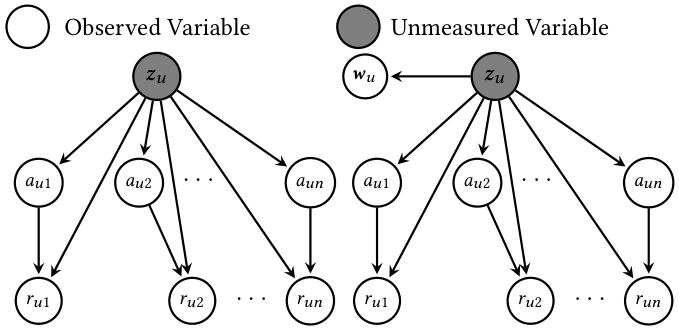
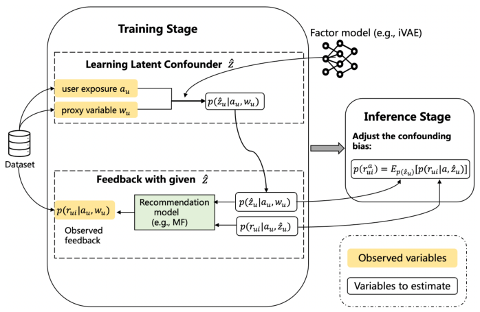

Debiasing Recommendation by Learning Identifiable Latent Confounders (通过学习可识别潜在混淆因子实现推荐去偏)
- 会议/期刊: KDD 2023 (29th ACM SIGKDD)
- 作者与机构: Qing Zhang、Jiheng Zhang (HKUST)；Xiaoying Zhang、Yang Liu、Ruocheng Guo (ByteDance Research)；Hongning Wang (University of Virginia)；Min Gao (重庆大学)
- 推荐链路定位: 精排（反馈/偏好预估打分）
- 研究方向: 去偏公平、可信隐私与工业架构 / 协同过滤
- 论文原文: https://arxiv.org/abs/2302.05052v2
- 开源代码: https://github.com/BgmLover/iDCF
TL;DR (1分钟核心速览)
推荐系统要预测"若曝光则用户会给什么反馈"的反事实结果，但用户社会经济地位等不可观测混淆因子同时影响曝光与反馈，导致伪相关。既有 Deconfounder 从曝光向量反推替代混淆因子，存在不可识别性：在有限数据集下反事实概率只能落到一个可行区间而非唯一点。本文提出 iDCF，引入用户特征作为混淆因子的代理变量 (proxy)，用近端因果推断额外增加一个条件边缘约束，使 \(p(r^{\boldsymbol{a}}_{ui})\) 唯一可识别并有定理保证。在 Coat/Yahoo!R3/KuaiRand 的无偏全库排序上，NDCG@5 相对最优基线分别提升 3.89%/0.70%/0.37%，小样本 Coat 提升最显著。
Background & Motivation (背景与核心矛盾)
- 主流范式: 把曝光视为 treatment、反馈视为 potential outcome；对可测混淆因子（物品流行度、视频时长、创作者）用后门调整/IPW，对不可测混淆因子则用有界假设下的鲁棒优化 (RD-IPS)、不变学习 (InvPref)、工具变量/中介变量，或 Deconfounder 从曝光序列学替代混淆因子。
- 前人局限: ① 有界/环境/IV 假设过强且无法给出反事实的可识别性保证，实际常次优；② Deconfounder 虽不需辅助变量，但把 4 个未知联合概率 \(p_{zr|\boldsymbol{a}}\) 只压在 3 个约束（归一化 + 两个边缘）上，自由度恒为 1，反事实概率只能确定在一个区间内——数据无穷也不收敛。
- 核心洞察 (Key Insight): 用户特征（如近期消费水平）是混淆因子（收入）的后代节点，满足"给定混淆因子与曝光后与反馈独立"的排除限制，因而可作为 proximal proxy 补上第 4 个约束。
- 本文切入点: 将推荐建模为多 treatment（多物品曝光）下的近端因果推断问题，用代理变量推断潜在混淆因子，从而识别而非仅"近似"反事实反馈。

Method (核心方法设计)
1. 整体框架 (Overall Architecture)
iDCF 是与反馈模型无关 (feedback-model-agnostic) 的两阶段框架。第一阶段：以曝光向量 \(\boldsymbol{a}_u\)为观测、代理变量\(\boldsymbol{w}_u\)为辅助条件，用 iVAE 学后验\(q_\phi(\hat{\boldsymbol{z}}_u|\boldsymbol{a}_u,\boldsymbol{w}_u)\)，其解码器重建整条曝光向量，从而把\(\hat{\boldsymbol{z}}_u\)学到"与真混淆因子相差一个双射变换"的等价类。第二阶段：把\(\hat{\boldsymbol{z}}_u\)送入任意打分模型\(f(u,i,\hat{\boldsymbol{z}}_u;\eta)\)，对后验取期望拟合真实反馈。推断时不再依赖曝光的反推，而是对\(p(\hat{\boldsymbol{z}}_u|\boldsymbol{w}_u)\) 取期望做后门调整，输出去偏分数用于排序。
flowchart TD
A["曝光向量 a_u + 代理变量 w_u(用户特征)"] --> B["iVAE: q(ẑ_u|a_u,w_u) 与 曝光重建"]
B --> C["潜在混淆因子后验 p(ẑ_u|w_u)"]
C --> D["反馈模型 f(u,i,ẑ_u)=f1(u,i)+f2(ẑ_u,i)"]
D --> E["推断: 对 ẑ_u 取期望 E[p(r_ui|a,ẑ_u)]"]
E --> F["去偏打分 / 全库排序"]
2. 关键设计拆解 (Key Designs)
- 代理变量补约束，破解不可识别性: 引入 \(\boldsymbol{w}_u=g(\boldsymbol{z}_u)\)、\(\boldsymbol{w}_u\perp r_{ui}|(\boldsymbol{z}_u,\boldsymbol{a}_u)\)后，未知量仍是 4 个但约束增至 4 条（多出\(\boldsymbol{w}_u=0/1\)两条条件边缘），方程组恰定，\(p(r^{\boldsymbol{a}}_{ui})\) 有唯一解。直观上：消费水平这一"影子"把收入这一隐变量钉死了。
- iVAE 学潜在混淆因子（含曝光重建项）: 最大化证据下界 \(\mathcal{L}(\theta,\phi)=\mathbb{E}_{q_\phi}\big[\log p_\theta(\hat{\boldsymbol{z}}_u|\boldsymbol{w}_u)-\log q_\phi(\hat{\boldsymbol{z}}_u|\boldsymbol{a}_u,\boldsymbol{w}_u)\big]+\mathbb{E}_{q_\phi}\big[\log p_\theta(\boldsymbol{a}_u|\hat{\boldsymbol{z}}_u)\big]\)， 其中先验/后验取高斯位置-尺度族、第二项为逐物品 Bernoulli 的负交叉熵。该项迫使 \(\hat{\boldsymbol{z}}_u\) 能重建整条曝光向量（而非只解释曝光频次），这是相对 Deconfounder 的关键增量。
- 加性反馈模型与推断期调整: \(f(u,i,\hat{\boldsymbol{z}}_u)=f_1(u,i)+f_2(\hat{\boldsymbol{z}}_u,i)\)把内在偏好与混淆效应解耦；训练目标\(\mathcal{L}_{iDCF}(\eta)=\frac{1}{|\mathcal{D}|}\sum_{(u,i)\in\mathcal{D}} l\big(\mathbb{E}_{q_\phi} [f(u,i,\hat{\boldsymbol{z}}_u;\eta)],r_{ui}\big)\)（MSE/BCE）。因\(\boldsymbol{w}_u\)在训练与测试期不变，推断式为\(p(r^{\boldsymbol{a}}_{ui}|\boldsymbol{w}_u)=\mathbb{E}_{\hat{\boldsymbol{z}}_u|\boldsymbol{w}_u}[p(r_{ui}|\boldsymbol{a},\hat{\boldsymbol{z}}_u)]\)。采用 point-wise 拟合，免负采样；推理仅需一次编码器前向 + 少量采样期望，开销为\(O(d)\) 级。
Experimental Setup & Evaluation Protocol (实验设置与评估协议)
- 数据集与预处理:
| 数据集 | #Users | #Items | #Biased (训练) | #Unbiased (验证/测试) | 场景 |
|---|---|---|---|---|---|
| Coat | 290 | 300 | 6,960 | 4,640 | 服饰评分 |
| Yahoo!R3 | 5,400 | 1,000 | 129,179 | 54,000 | 音乐评分 |
| KuaiRand | 23,533 | 6,712 | 1,413,574 | 954,814 | 短视频点击 |
- 数据划分与防穿越: 全部 biased 数据作训练集；unbiased（随机曝光试验收集）30% 作验证、70% 作测试，避免用有偏日志评估。
- 排名评测协议: 无偏
Full-Ranking——每个用户在测试期全部未交互物品上排序，指标 NDCG@5 / Recall@5。正样本定义：Coat/Yahoo!R3 评分 \(\geq 4\)；KuaiRand 用平台IsClick。 - 对比基线: MF、MF-WF（加用户特征）、IPS、RD-IPS、InvPref、DCF、DeepDCF-MF、iDCF-W（消融变体，VAE 无 proxy）。显著性用配对 t-test 报 p-value；合成数据额外验证可识别性（MCC 与可视化）。
Key Experimental Results (实验关键数据)
1. 主实验对比 (Main Results)
| 模型 | Coat N@5 | Coat R@5 | Yahoo N@5 | Yahoo R@5 | Kuai N@5 | Kuai R@5 |
|---|---|---|---|---|---|---|
| MF | 0.5524 | 0.5294 | 0.5629 | 0.7129 | 0.3748 | 0.3247 |
| MF-WF | 0.5529 | 0.5341 | 0.5649 | 0.7144 | 0.3762 | 0.3255 |
| IPS | 0.5450 | 0.5260 | 0.5490 | 0.6967 | 0.3696 | 0.3224 |
| RD-IPS | 0.5448 | 0.5240 | 0.5550 | 0.7020 | 0.3690 | 0.3207 |
| InvPref | 0.5405 | 0.5295 | 0.5928 | 0.7414 | 0.3778 | 0.3283 |
| DCF | 0.5509 | 0.5329 | 0.5675 | 0.7116 | 0.3751 | 0.3243 |
| DeepDCF-MF | 0.5373 | 0.5141 | 0.6395 | 0.7729 | 0.4078 | 0.3491 |
| iDCF-W | 0.5255 | 0.4971 | 0.6410 | 0.7712 | 0.4072 | 0.3481 |
| iDCF (ours) | 0.5744 | 0.5504 | 0.6455 | 0.7837 | 0.4093 | 0.3513 |
| Improv.% | +3.89% | +3.05% | +0.70% | +1.40% | +0.37% | +0.63% |
| p-value | 7e-4 | 2e-2 | 2e-3 | 1e-4 | 5e-3 | 1e-4 |
2. 消融实验 (Ablation Study)
| 变体 | 混淆因子 | 代理变量 | Coat N@5 | Yahoo N@5 | Kuai N@5 | 合成 \(\beta=3.0\) N@5 |
|---|---|---|---|---|---|---|
| MF-WF（无去偏） | ✗ | ✗ | 0.5529 | 0.5649 | 0.3762 | 0.8220 |
| iDCF-W（VAE，无 proxy） | ✓ | ✗ | 0.5255 | 0.6410 | 0.4072 | 0.8226 |
| iDCF（iVAE + proxy） | ✓ | ✓ | 0.5744 | 0.6455 | 0.4093 | 0.8368 |
3. 关键实验发现 (Key Findings)
- 可识别性在稀疏小样本上决定生死：Coat 仅 290 用户时，DCF / DeepDCF-MF / iDCF-W 全部低于基线 MF（0.5373/0.5255 vs 0.5524），而 iDCF 反升到 0.5744（+3.89%）；说明"能否唯一识别"比"模型拟合容量"更关键，参数化混淆因子在小数据上反而过拟合。
- 代理变量的收益随混淆强度放大：真实数据上 iDCF 相对 iDCF-W 仅 +0.70%/+0.37%，但在合成数据 \(\beta=3.0\)（强混淆）时升至 +1.73%（0.8368 vs 0.8226），\(p=8e{-}13\)；\(\beta\) 从 1.0 到 3.0 性能差单调扩大，直接验证去偏机制的有效性来源。
- 学到的混淆因子保真度与排序性能正相关：\(\gamma=0\)时 MCC 为 0.8394 (iDCF) vs 0.6050 (iDCF-W)；曝光噪声\(\gamma=20\)时仍保持 0.6062 vs 0.0682（近 9 倍），且性能同步衰减——证明"代理变量\(\to\)可识别混淆因子\(\to\)更准反事实"这条因果链是可度量的。
Highlights & Limitations (亮点、对比与审稿批判)
- 与代表作对比 (vs. Prior Work): 相比 DCF/DeepDCF，本文不满足于"用曝光学替代混淆因子"，而是补齐约束使其可识别，并提供定理 4.3；相比 RD-IPS 的有界鲁棒假设与 InvPref 的多环境假设，iDCF 只要求用户特征是混淆因子的后代且满足排除限制，假设更弱、更易在工业数据上落地。独特之处是把推荐形式化为多 treatment 问题，从而能复用曝光向量的重建信息，放松了对 proxy 的信息量要求。
- 可迁移亮点: ① "加一个代理变量补一条边缘约束"的思路可直接迁移到曝光去偏、位置去偏、延迟反馈等隐变量识别场景；② 加性分解 \(f_1(u,i)+f_2(\hat{\boldsymbol{z}}_u,i)\) 让去偏模块与任意 backbone（MF/GNN/Transformer）解耦，工程上可插拔。
- 审稿级局限批判: ① 依赖 completeness / equivalence 等不可检验假设，proxy 选错（如 Yahoo!R3 中问卷特征与反馈无关）会引入噪声，DeepDCF-MF 在该集上被 iDCF-W 反超即是警示；② 训练需两阶段串行 + iVAE 隐变量采样，推理需对后验做蒙特卡洛期望，相对单塔 MF 有额外延迟与调参（\(\boldsymbol{z}\) 维度、先验方差）敏感度，论文未给在线 A/B 或时延数据；③ 仅验证 MF 系 backbone 与三个中等规模数据集，未覆盖序列/生成式精排。
Rating (四维评分)
- 方法创新性 (Novelty): ⭐⭐⭐⭐ （首次将 proximal causal inference 引入多 treatment 推荐，明确指出并量化 Deconfounder 的自由度缺陷，附识别性定理）
- 评估协议与实验扎实度 (Protocol & Experiments): ⭐⭐⭐⭐ （三个真实集均用随机曝光 unbiased 数据做 Full-Ranking，配 p-value 与合成集 ground-truth MCC 验证，但缺线上实验与更大 backbone）
- 写作与数学规范度 (Clarity & Rigor): ⭐⭐⭐⭐ （Example 3.1 的 4 未知 3 约束推演极清晰，公式编号与假设逐条对应；常数/超参细节下放附录略有割裂）
- 工业落地与复现价值 (Industrial & Practical Value): ⭐⭐⭐⭐ （代码开源、框架与反馈模型无关可直接插拔；两阶段训练与后验采样带来额外链路成本，需权衡）